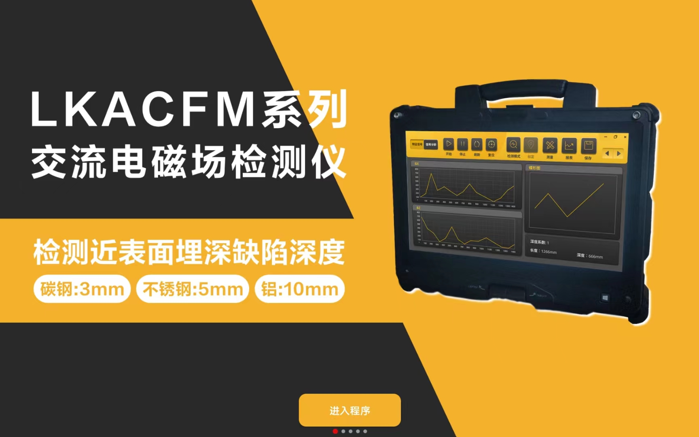

使用说明
联系电话：18853758756
所属单位：济宁鲁科检测器材有限公司
1、概述
“ACMF软件”是一款以物联网作为基础，让检测操作人员方便为主题，让无损检测更加快捷为信念的一款服务功能型APP。软件功能主要分为“数据解析”、“数据显示”、“数据分析”和“报告生成”。软件采用图像加数字的方式显示检测结果，根据设置选项自动生成检测报告可使检测人员判断更加直观效率更加高效。
2、功能简介
2.1启动页
点击桌面图标即可进入系统欢迎界面。点击下部“进入程序”按钮即可进入主界面。
